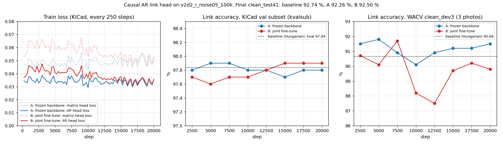

<title>AR Head Training Curves</title>
<style>
:root { --bg: #ffffff; --fg: #1d2420; --dim: #5d6a62; }
@media (prefers-color-scheme: dark) { :root:not([data-theme="light"]) { --bg: #121614; --fg: #e3e9e5; --dim: #9aa8a0; color-scheme: dark; } }
:root[data-theme="dark"] { --bg: #121614; --fg: #e3e9e5; --dim: #9aa8a0; color-scheme: dark; }
body { background: var(--bg); color: var(--fg); font: 15px/1.55 system-ui, sans-serif; margin: 0; }
main { max-width: 1400px; margin: 0 auto; padding-block: 20px 40px; padding-inline: 16px; }
h1 { font-size: 20px; margin: 0 0 6px; }
p, li { color: var(--dim); max-width: 90ch; }
img { width: 100%; height: auto; background: #fff; border-radius: 6px; }
</style>
<main>
<h1>Causal AR link head: training curves</h1>
<p>Backbone v2d2_I_noise05_100k. A = backbone frozen, only the AR head trained (lr 3e-4). B = backbone + AR head fine-tuned together (lr 1e-4). 20k steps each, 16 KiCad boards per step. Dotted line = the same checkpoint with Hungarian decoding.</p>

<ul>
<li>Left: the AR head loss (solid) is about 30 % below the matrix head loss (dashed) from the first steps on, and stays flat: the head converges within ~2,500 steps.</li>
<li>Middle: on the KiCad validation subset both runs stay at 97.6–97.9 %, the same as the baseline (97.84 %).</li>
<li>Right: on the 3 WACV dev photos, A moves around the baseline (90.1–91.8 %); B drops to 87.5 % mid-run and ends below the baseline.</li>
<li>Final clean_test41: baseline 92.74 %, A 92.26 %, B 92.50 %. The lower training loss does not turn into higher accuracy.</li>
</ul>
</main>
